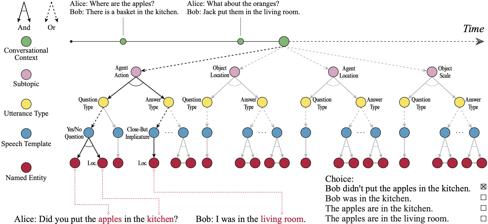

About Me
I'm a fourth-year Ph.D. student in the Department of Computer Science at University of California, Los Angeles (UCLA). I work at the Center for Vision, Cognition, Learning and Autonomy (VCLA) under the supervision of Prof. Song-Chun Zhu. My research interests include social robots, cognitive modeling, human communication dynamics, etc.
Publication / Preprints
|
Shuwen Qiu, Song-Chun Zhu, Zilong Zheng arXiv preprint arXiv:2306.15253 2023. arXiv |
|
Shuwen Qiu*, Sirui Xie*, Lifeng Fan, Tao Gao, Song-Chun Zhu, Yixin Zhu * Equal contributions Conference on Neural Information Processing Systems (NeurIPS), 2022. arXiv / Web |
|  |
Zilong Zheng, Shuwen Qiu, Lifeng Fan, Yixin Zhu, Song-Chun Zhu ACL-Findings, 2021. Paper / Project / Bibtex |
|
Lifeng Fan*, Shuwen Qiu*, Zilong Zheng, Tao Gao, Song-Chun Zhu, Yixin Zhu * Equal contributions IEEE Conference on Computer Vision and Pattern Recognition (CVPR), 2021. (Oral) Paper / Supp / Code / Dataset / Demo / Bibtex |
|
Shuwen Qiu*, Hangxin Liu*, Zeyu Zhang, Yixin Zhu, Song-Chun Zhu * Equal contributions The IEEE/RSJ International Conference on Intelligent Robots and Systems (IROS), 2020. Paper / Code / Web / Demo / Presentation / Bibtex |
|
Akila Kadambi , Nick Ichien, Shuwen Qiu, Hongjing Lu Attention Perception & Psychophysics (APP), 2020. Paper / Bibtex |